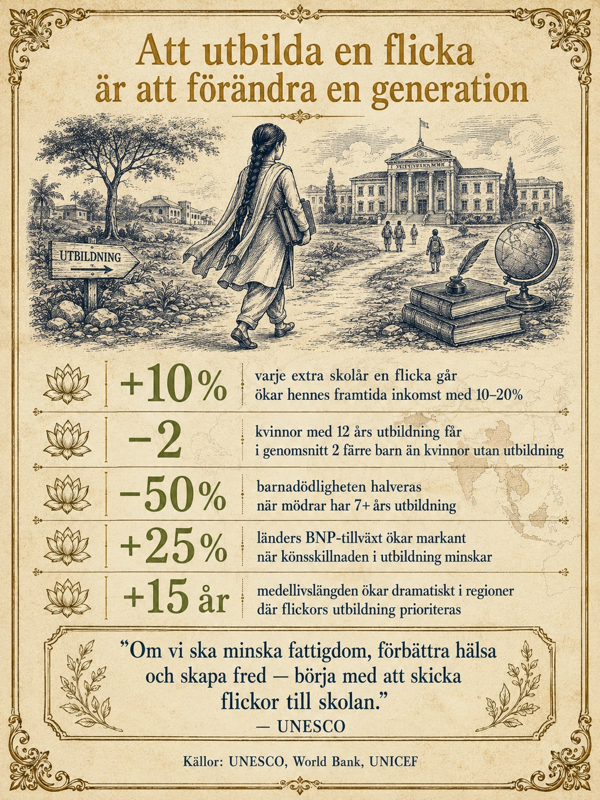

En av de starkaste sambanden i samhällsvetenskapen
Av alla mått som forskare studerar för att förstå varför vissa länder utvecklas och andra inte, är det ett som sticker ut starkare än de flesta andra: utbildningsnivån, särskilt utbildningen av flickor.

När forskare jämför länder eller följer samma land över tid visar det sig att när andelen flickor som går i skola ökar, händer en hel rad förändringar:
- Inkomsterna stiger, inte bara för kvinnorna själva utan för hela familjen
- Barnadödligheten sjunker
- Antalet barn per kvinna minskar
- Folkhälsan förbättras
- Den ekonomiska tillväxten ökar
- Demokratin stärks
Detta är inte slumpmässigt. Det är samma mönster i Bangladesh som i Brasilien, i Kenya som i Vietnam. Sambandet är så starkt att Världsbanken, FN och de flesta utvecklingsforskare anser utbildning av flickor som den mest kostnadseffektiva insatsen mot fattigdom som finns. Inte vatten, inte mediciner, inte vägar — utan att skicka flickor till skolan.
Hur fungerar detta? Och varför just flickor?
Effekt 1: Egna inkomster
Den mest direkta effekten av utbildning är att den ökar individens framtida inkomst. Detta gäller både pojkar och flickor, men det är värt att stanna vid siffrorna.
För varje extra år en flicka går i skola ökar hennes framtida inkomst med ungefär 10–20 procent. Det är en kraftfull multiplikator. En flicka som går igenom hela grundskolan (9 år) kan tjäna dubbelt så mycket som en flicka som inte gått alls. En flicka som dessutom går gymnasiet eller högre utbildning kan tjäna betydligt mer.
I många utvecklingsländer har detta direkta konsekvenser för familjens välbefinnande. När en kvinna i en familj har egen inkomst förändras balansen — hon kan fatta egna beslut, satsa på sina barns utbildning, och försörja sig själv om något händer med mannen. Forskning från flera länder visar att kvinnors inkomst i högre grad än mäns spenderas på barnens hälsa och utbildning.
Effekt 2: Färre barn — men friskare
Detta är kanske den mest dramatiska effekten. Antalet barn per kvinna är starkt kopplat till hennes utbildningsnivå.
I länder med låg kvinnlig utbildning föder kvinnor ofta 5–7 barn i genomsnitt. I länder där flickor får 12 års utbildning sjunker antalet till 2–3 barn. Detta är inte tvång — det är ett resultat av att kvinnor med utbildning:
- Gifter sig senare
- Får sitt första barn senare
- Har kunskap om preventivmedel
- Har ekonomisk självständighet att fatta egna beslut
- Investerar i färre barn med bättre liv
Detta är direkt kopplat till den demografiska transitionen vi gick igenom i avsnitt 3. Övergången från stadium 2 till stadium 3 — där födelsetalen börjar sjunka — drivs i hög grad av att flickor börjar gå i skola.
Och färre barn betyder friskare barn. När föräldrar har resurser att investera i färre barn istället för att fördela dem mellan många, blir varje barn bättre omhändertaget. Spädbarnsdödligheten halveras i regioner där mödrar har minst 7 års utbildning. Det är en livräddande effekt som påverkar miljontals familjer varje år.
Effekt 3: Bättre hälsa för hela familjen
Utbildade kvinnor förändrar familjens hälsa på flera sätt.
De förstår grundläggande hygien och näringsbehov. De vet vad rena händer betyder, varför vatten behöver kokas, hur barn ska få varierad kost. Det är inte saker som är självklara utan utbildning — det är saker man lär sig.
De förstår symptom på sjukdom och söker vård tidigare. En kvinna med 8 års skolgång är dramatiskt mer benägen att söka läkarvård för ett febrigt barn än en kvinna utan utbildning.
De prioriterar barnens utbildning. Mödrar som själva har gått i skola är mer benägna att se till att deras egna barn — både pojkar och flickor — gör detsamma. Det är hur effekten sprids över generationer.
I många utvecklingsländer är mödrarnas utbildningsnivå den enskilt starkaste prediktorn för barnens överlevnad, starkare än familjens inkomst, starkare än fars yrke, starkare än landets BNP per person.
Effekt 4: Bredare samhällseffekter
Effekterna stannar inte vid familjen. När en betydande andel av ett lands flickor får utbildning förändras hela samhällsbildningen.
Ekonomisk tillväxt: Forskning visar att länder med stora könsklyftor i utbildning växer långsammare än länder där flickor får samma utbildning som pojkar. Tillsammans utgör män och kvinnor ekonomin — om hälften av befolkningen hindras från att bidra fullt ut förlorar landet hälften av sin potential.
Demokratisering: Det finns ett starkt samband mellan kvinnlig utbildning och demokrati. Länder där flickor får utbildning utvecklas oftare mot demokratiska samhällen. Detta är inte direkt orsak och verkan, men sambandet är starkt nog att flera forskare anser flickors utbildning vara grundläggande för en fungerande demokrati.
Fred och säkerhet: Länder med högre utbildningsnivå för kvinnor har färre interna konflikter. Det är komplicerat varför, men det handlar troligen om att utbildade kvinnor har bättre möjlighet att lösa konflikter inom familjen utan våld, att de är mer politiskt engagerade, och att samhällen där kvinnor har inflytande tenderar att fatta mindre extrema politiska beslut.
Var är problemet störst?
Trots framstegen är fortfarande miljontals flickor utan tillgång till grundläggande utbildning. UNESCO uppskattar att omkring 130 miljoner flickor i världen står utanför skolan.
De värst drabbade regionerna är:
- Subsahariska Afrika — där omkring 9 miljoner flickor i åldrarna 6–11 år förväntas aldrig sätta sin fot i ett klassrum
- Södra Asien — Afghanistan har förbjudit flickor att gå i skolor över grundskolenivå sedan 2021
- Mellanöstern — krig och konflikter har slagit ut utbildningssystem i Jemen, Syrien och delar av Irak
I dessa regioner är hindren mångfacetterade. Fattigdom gör att familjer prioriterar pojkars utbildning om de bara har råd med en. Tidiga giftermål tar flickor från skolan vid 11-14-årsåldern. Kulturella normer kan dikterar att flickor ska stanna hemma och ta hand om hushållet. Säkerhetsrisker — att gå långa sträckor till skolan kan vara farligt för flickor. Bristande infrastruktur — i många byar saknas helt enkelt skolor inom rimligt avstånd, och saknas separata toaletter för flickor, vilket gör att menstruerande flickor inte kan delta.
Exempel på framgångsrika insatser
Detta är inte hopplöst. Många insatser har visat sig fungera.
Bangladesh har sedan 1990-talet satsat hårt på flickors utbildning genom statliga bidrag till familjer vars döttrar går i skola. Resultatet: idag går nästan lika många flickor som pojkar i skolan, fertiliteten har sjunkit från 6 barn per kvinna till 2, och landet har gått från extrem fattigdom till medelinkomstland.
Rwanda har efter folkmordet 1994 satsat på utbildning som verktyg för försoning och utveckling. Idag har Rwanda en av Afrikas högsta andelar flickor i skola, och kvinnor utgör majoriteten i landets parlament.
Iran är ett historiskt exempel. Trots regimens konservatism har Iran sedan 1980-talet satsat starkt på flickors utbildning, och idag är iranska kvinnor bland de mest utbildade i Mellanöstern. Fertiliteten har sjunkit från 6 till under 2 barn per kvinna — en av de snabbaste demografiska transitionerna i världshistorien.
Familjeplaneringsprogram i Bangladesh, Kenya och Etiopien som kombinerar utbildning, hälsorådgivning och tillgång till preventivmedel har visat sig vara extremt effektiva.
Stipendier för flickors gymnasieskolgång i flera afrikanska länder har visat sig kunna fördubbla andelen flickor som fullföljer gymnasiet.
Skolmåltider — gratis lunch i skolan — är en av världens mest kostnadseffektiva insatser. Det får fler barn att gå i skolan, förbättrar deras inlärning, och avlastar familjernas matkostnader.
Vad det säger oss
Det finns inget enskilt mått som mer dramatiskt påverkar ett samhälles framtid än flickors utbildning. Inte BNP, inte teknisk innovation, inte ens demokrati. Att skicka en flicka till skolan är att förändra en hel kedja — inkomster, hälsa, antal barn, samhällets utveckling, demokratins styrka, ekonomins tillväxt.
Det är därför UNESCO säger: "Att utbilda en flicka är att förändra en generation." Det är inte en romantisk slogan — det är en av samhällsvetenskapens bäst belagda observationer.
Och det är något att tänka på som svenska elever. I Sverige tar vi flickors utbildning för given — vi har haft allmän skolgång för båda könen i över hundra år. Men för 130 miljoner flickor i världen är detta fortfarande en dröm de inte får leva. Att förstå hur kraftfull deras utbildning skulle vara är att förstå hur ojämn världen fortfarande är — och var de mest kraftfulla insatserna kan göras.
Djupdykning till avsnitt 6 (Befolkning och resurstillgång). Fördjupningsnivå.